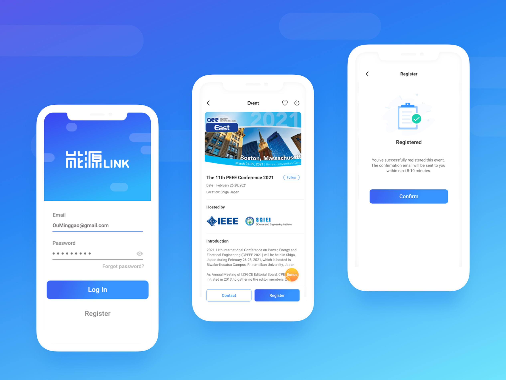
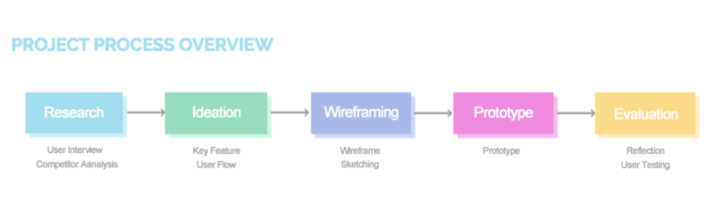
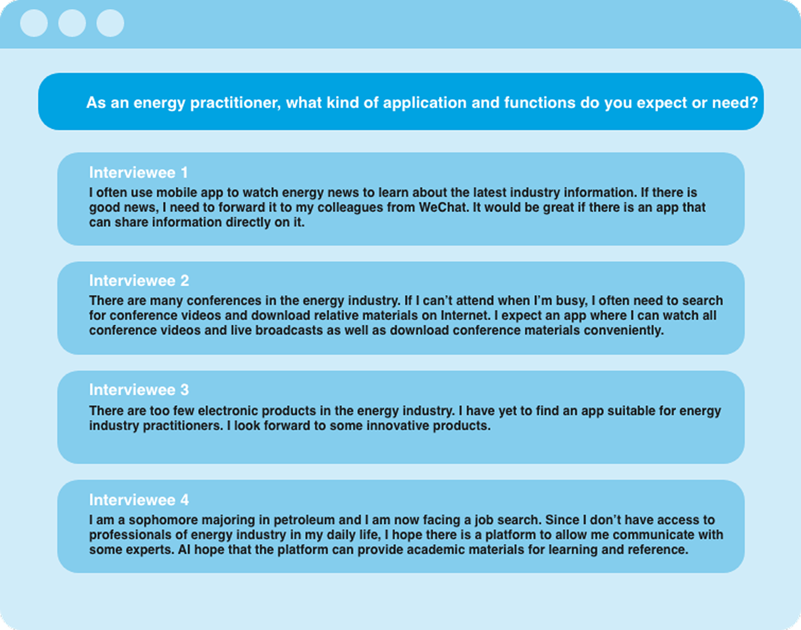
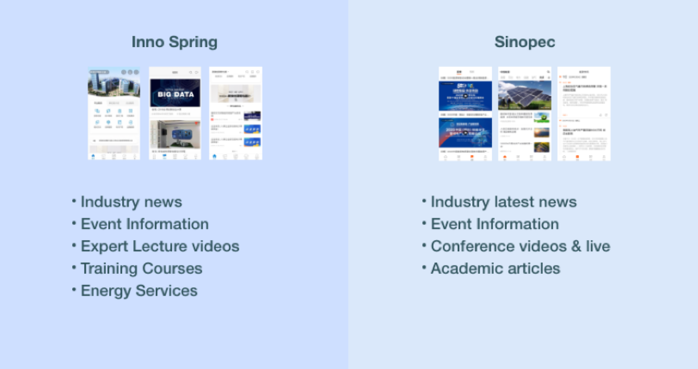
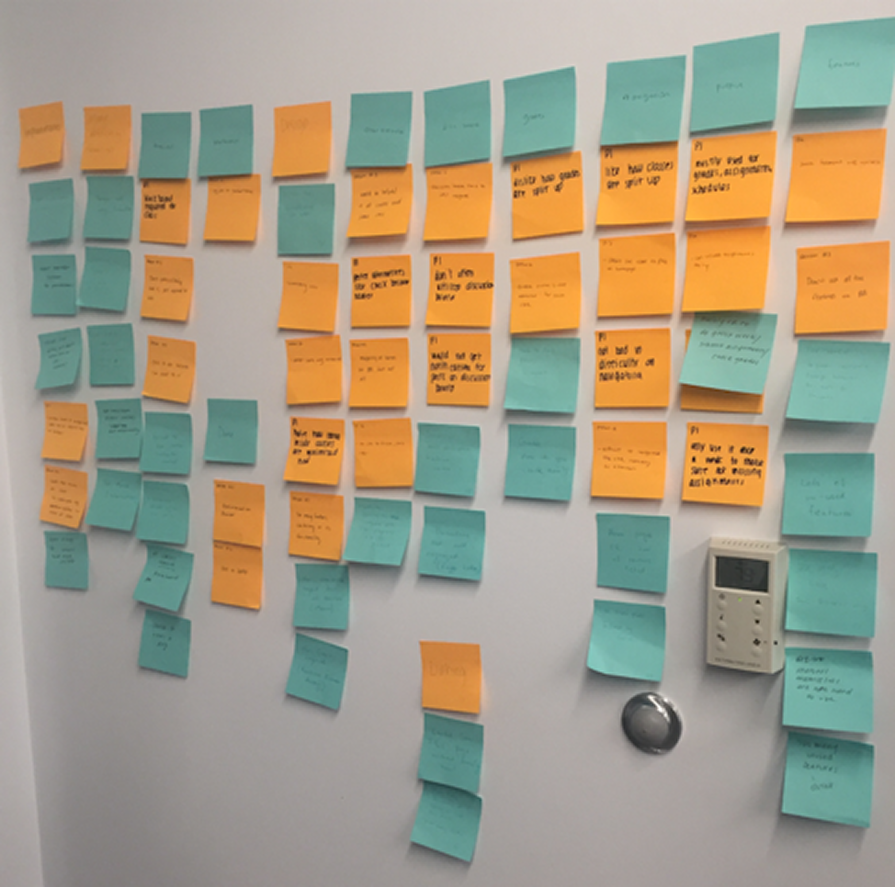
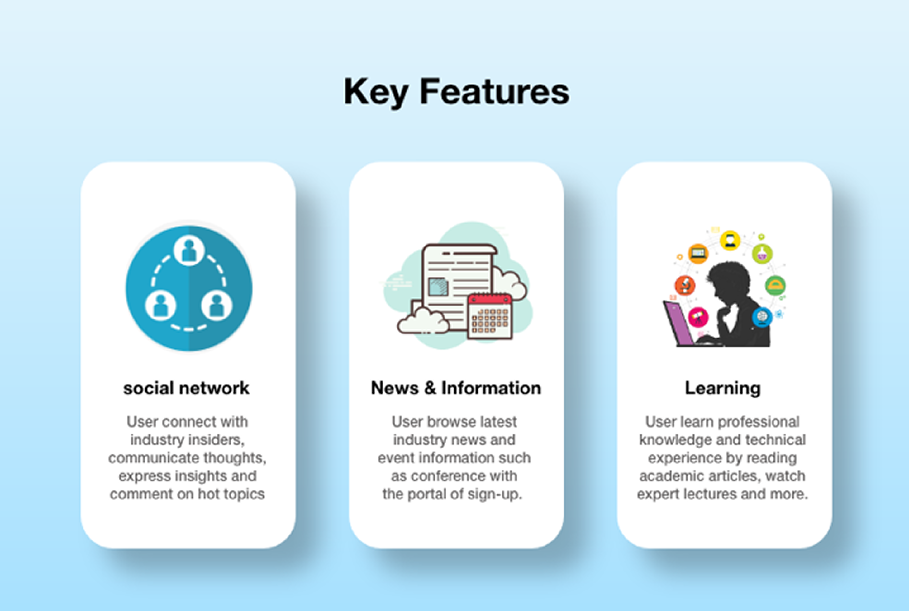
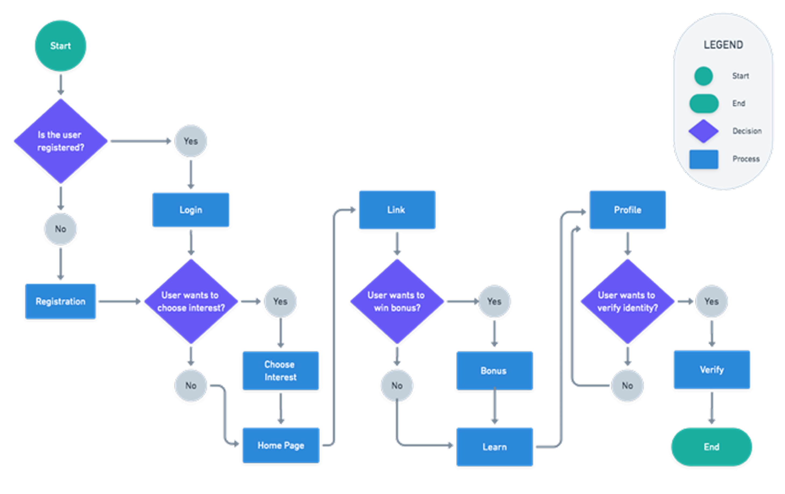
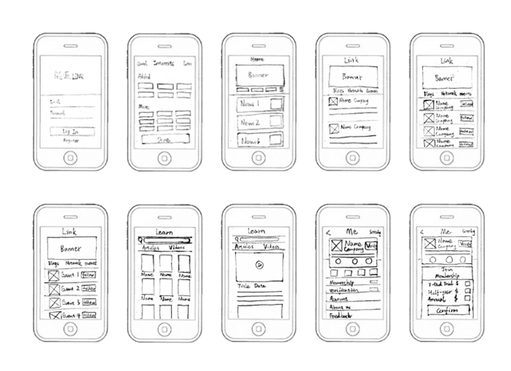
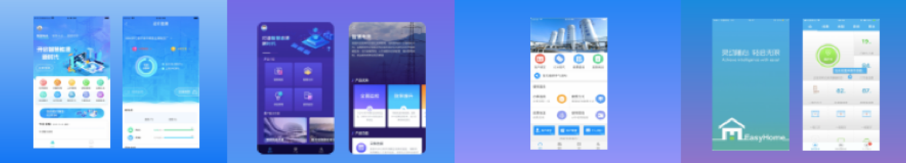

Energy Link
An app designed for creating a cross-border professional service platform for energy industry practitioners with integrated learning experiences

01INTRODUCTION
Project Overview
Energy Link is the mobile application developed by China Energy Net which is China's most visited and influential energy industry portal. It’s designed as a one-stop learning exchange platform in energy filed.
In recent years, the energy industry has closely followed the trend of mobile terminal to develop mobile application products. However, it may be due to the traditional and serious industry attributes of energy industry itself, apps on energy topics are still very limited. For example, some apps only provide energy news, and some apps only focus on customized energy services for energy companies themselves. Therefore, this leads to a very single and boring type of app products in the energy industry on the market. China Energy Net, where I worked previously, found this opportunity, and wanted to combine its strong background and popularity in the energy field to develop and create a cross-border professional service platform for all energy industry practitioners that integrates multiple product functions.
02DESIGN CHALLENGE
How might we design a unique cross-border professional service platform for the energy industry practitioners?
03DESIGN DIRECTION
Solution
Our solution focuses on a way to design a one-stop learning and communication platform in energy filed. With this app, energy industry practitioners could exchange professional knowledge and technical experience, browse the latest news, meet authoritative experts, comment on the hot topics of the industry, watch experts’ lectures, download conferences’ relative materials and more.

04RESEARCH
User Interview & Survey
Since I didn’t know much about the energy industry, I first conducted interviews with four energy industry practitioners to see what products and functions they expect. I learned that the current mobile app products for energy industry are pretty limited. Users urgently need an innovative product that is exclusive to the energy field and combines multiple functions such as browsing news, gaining information, learning, communicating and social networking.
Their responses helped me gauge what the immediate thoughts of some users were and their core needs. Although these aren’t quantifiable, it gave me valuable insight into what is currently working and what is not.

05ANALYSIS
Competitor Analysis
After the user interview, I conducted research on competitive products in the same industry.
Out of all the competing apps I looked at, Inno Spring and Sinopec are the best. Both provide industry news and information, event column and expert lectures, but when I interviewed energy industry practitioners, they said that in addition to industry information, users prefer to use the app as a platform to learn professional industry knowledge, communicate thoughts and share information with other professionals and enthusiastics in the same industry. Therefore, in addition to industry information, functions such as social networking, content creation, and industry professional materials are also core needs of users.
In addition, Inno Spring also provides industry training column. However, according to interviewees and my in-depth research on this issue on the Internet, most of the energy industry training is independently contracted and held by several leading companies. Industry professionals are organized by companies to participate in training every year, so providing training information in the app is of little significance.

06IDEATION
Ideating the App
Then, I began brainstorming and exploring potential feature opportunities by writing down a wide range of initial ideas on sticky notes and mapping them across the wall. This process allowed me to quickly visualize different possibilities, identify recurring themes, and think broadly about how the platform could better support users’ needs and workflows.

After completing the ideation process, I reviewed and organized all of the sticky notes into groups based on common goals, user needs, and functionality. From there, I synthesized the concepts into five core feature categories that would serve as the foundation of the overall product experience.

07PROCESS
User Flows
Then, I created a user flow within the app’s key features. The user flow lays out the user's movement through the mobile app, mapping out each and every step the user takes—from entry point right through to the final interaction.

08WIREFRAMING
Sketching the Interface

After exploring the concept, I sketched low-fidelity wireframes to establish hierarchy, validate the design goals, and select the right components for each function.
09VISUAL EXPLORATION
Visual Design
Now, with a clear wireframe, I began exploring with different color themes to get an initial idea of how the mobile design should "feel" like. After looking many examples, I found that blue is still the most universally favored color for business. It relates to trust, honesty and dependability, therefore helping to build customer loyalty. The energy industry is inherently more traditional and rigid, so I decided to use the combination of blue and white color scheme to make the overall page look concise and professional.

10OUTCOME
Final Output

The final product provides user a cross-border professional service platform of energy industry that combining the functions of browsing latest industry news, registering recent events, information, social networking with industry insiders, expressing personal insights, learning professional knowledge & technical experience, downloading relative materials.
Additionally, user are offered paid membership to enjoy special benefits. User can also win extra bonus of free membership by inviting friends to join specified events. Meanwhile, there are functions such as real-name verification to increase the reliability and security of using the app.
11CLOSING
Reflection
As the first project I independently led after joining the company, Energy Link strengthened my skills in research, service design, problem framing, and cross-functional collaboration.
The complex domain taught me how to synthesize a large amount of information into an actionable product direction and communicate unfamiliar research clearly to PMs, developers, and other teams.
12IMPACT
Metrics 👀
Across a 3-month project, research included 4 energy-practitioner interviews and comparison of 2 leading competitor products, Inno Spring and Sinopec.
The findings consolidated 5 core capability areas—information, learning, events, content creation, and professional communication—into 1 platform. At concept stage, this represented an estimated 30% reduction in cross-source switching for key tasks; formal post-launch usage and conversion metrics were not available.